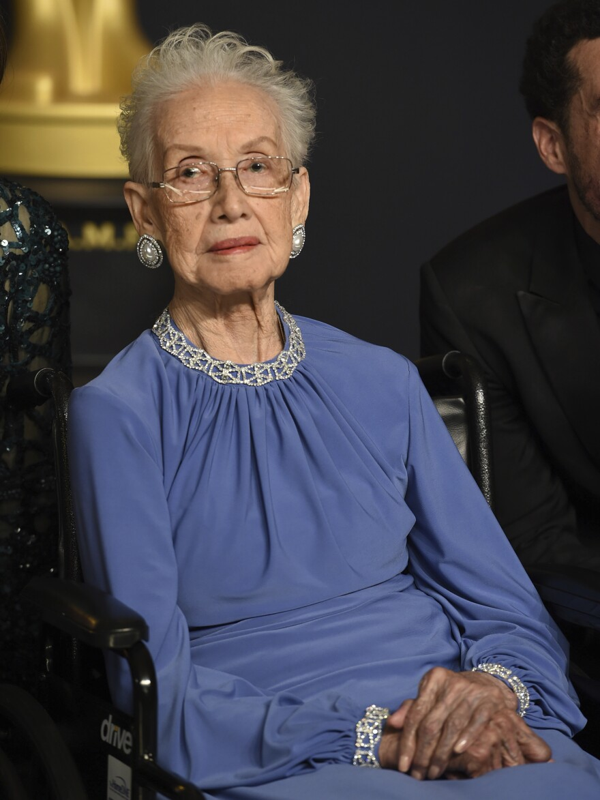
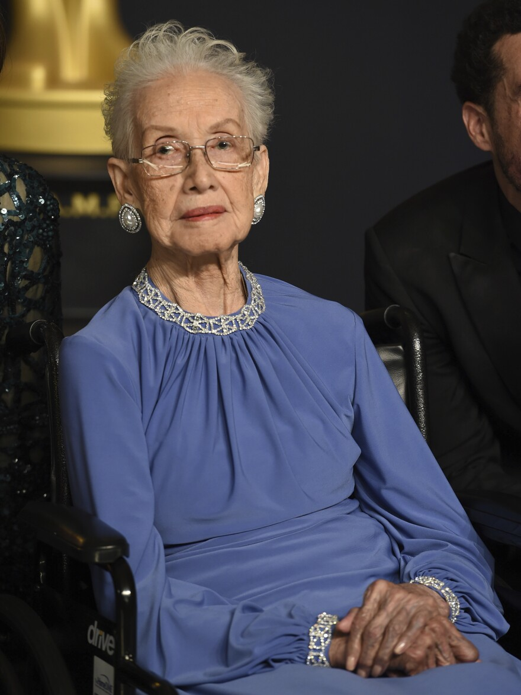

Katherine Johnson
- Started working at NASA in 1953.
- Performed the math/physics calculations for NASA's early space missions.
- When NASA started using “digital computers” she verified that the digital computers were doing things correctly
- Awarded the American Medal of Freedom by President Barack Obama in 2015.
- Had a (really good!) movie made about her called Hidden Figures (2016).
- Is of African/American descent.
 
